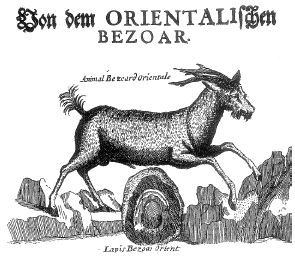

ŞEKİL 30. Bezoar keçisi ve bezoar taşı (1704).58
“Bezoar” (panzehirtaşı) keçi ve antilop gibi geviş getiren hayvanların midelerinde, onların yuttuğu kılların birikmesi ve başkaca çözünmez katı maddelerle birlikte kompozit malzeme oluşturacak biçimde birbirine yapışarak taşlaşması ile oluşmaktadır. Ortaçağın kimi yazarlarına göre bu taşlar, bu hayvanların kalbinde ya da safra keselerinde oluşuyordu. 10. yüzyıl yazarlarından Ebu Mansur Muvaffak, derlediği eserinde bezoar taşından söz eder. İbn Zühr’e (“Avenzoar”) (1091-1161) göre bir tür alageyik, yılan yiyerek beslenmekteydi ve panzehirtaşı da bu beslenme sonucu oluşmaktaydı. Erkek geyikler yılanları yerken gözlerinden yaşlar akıyor, bu kıvamlı madde gözyaşı pınarlarında taş halinde katılaşıyor ve yeterince irileştikten sonra da geyiğin gözlerini ağaç dallarına sürtmesi sonucu yere düşüyordu. “Lacryma cervorum” adı verilen bu madde, Eski çağlardan beri bilinmekte olup bezoar taşına benzer uygulamalarda kullanılmıştır. Ceylanların, yaşadıkları bölgeyi işaretlemek için uzun ince dal ve otlara gözlerinin hemen altındaki bezlerden salgılanan ve katran gibi kokan bir madde bıraktıkları bilinmektedir (ŞEKİL 31). Avrupa’da bezoar üzerine değerli bir monograf, 1625’te Gaspar Bauhin (Caspar Bauhinus) (1560-1624) tarafından kaleme alınmıştır. Panzehirtaşının kalp üzerinde taşınacak olursa, melankoliyi defedeceğine inanılırdı. Panzehir taşlarının veba gibi çok bulaşıcı hastalıklara bile şifa getirdiği sanıldığından bunlar 18. yüzyıl ortalarına kadar Londra farmakopelerinde yer almıştır. Literatürde değişik türde bezoar adlarına rastlanmaktadır. Bunlardan biri “maymun bezoarı” (“bezoar simiae”) ya da “maymun taşı” (“lapis simiae”) olup Brezilya ya da Doğu Hindistan’da yaşayan belirli maymunların bedenlerinden elde edildiği söylenmektedir.